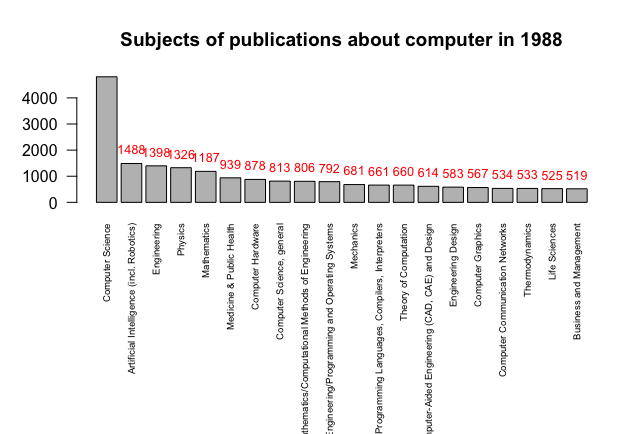

Get your API key. Create your datasets. Visualize them. Done.
Visit Springer Nature API Portal to get a free API key. Using an educational email address is recommended.
Using our Python 2 tool to get the statistics of the publications with selected keyword and year.
➊ Download KnoGlo tool here. You can also download or clone our repository.
➋ Prepare for the workspace to run Python. For example, on Mac, set the current file path to the "source-code/Statistical-Metadata-Visualization/Python-and-R" folder by using "cd" command in Terminal. For example,
cd mypath/source-code/Statistical-Metadata-Visualization/Python-and-R
➌ Run the dataset generator. If you want to filter by keyword only, run "KnoGlo-Dataset-Generator-keyword.py" by using this command:
python2 KnoGlo-Dataset-Generator-keyword.py
If you want to filter by both keyword and year, run this one:
python2 KnoGlo-Dataset-Generator-keyword-and-year.py
➍ KnoGlo dataset generator will first ask you to say a keyword as a topic of your choice. It could be a single word or phase.
➎ If applicable, enter a year for the publications that you'd like to see.
➏ Enter your Springer Nature API key. Press enter or return to start generate files.
Each time when you run this tool, it will generate six dataset files in CSV format that includes the statistics for all six constraints. All these files will be saved into a new folder named by your keyword (and year, if applicable).
A raw JSON output file will also be saved in the same folder in TXT format. This file includes your API key, so please do not share this file to the public.
After you get your dataset generated, visualize them in graphs.
KnoGlo includes a visualization tool in R.
➊ Download RStudio. You just need the FREE version of RStudio Desktop with Open Source License. Install it on your computer
➋ Go to the "source-code/Statistical-Metadata-Visualization/Python-and-R" folder. Open the visualization tool, "KnoGlo-Visualization.R", in RStudio.
➌ Look at line 7. Set the directory to the folder that includes the dataset files that you want to visualize. Just type that folder name. For example,
setwd("keyword_computer_year_1988")
When you opened this R tool, RStudio will automatically load the workspace from the current folder "Python-R" where this R tool is located, which is the same folder where all your datasets folders are being saved.
Run line 7.
➍ Now, run line 11 to 16 to store all information from your dataset to these six variables.
➎ Run line 18. It will ask you the keyword that you've used for your datasets. Input the exact same keyword here.
➏ If applicable, run line 21. It will ask you the year. Input the same thing. If you don't have a year constraint, you can type something like "all time" or "anytime", so the titles in the visualization will looks better, such as "Subjects of publications about medicine in anytime".
➐ Now, you are ready to visualize! Run line 29 to see a bar plot of the subjects of publications about your keyword (in a year range, if applicable). Here is an example:
➑ Before you run line 32 dev.off, don't forget to save your bar plot by pressing the "export" button on the top of the graph view. You can save it in PDF or as an image.
Same thing, run the rest of codes for other constraints.
Have fun visualizing!